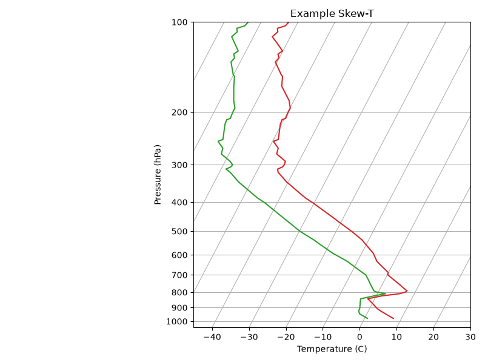

Note
Go to the end to download the full example code.
Creating a Skew-T Log-p Plot#
EMCPy has a method to produce skew-T log-p plots. Given pressure, temperature, and dewpoint temperature data, users can call the SkewT() method to create a plot with the appropriate x and y axes.

import numpy as np
import matplotlib.pyplot as plt
from io import StringIO
from emcpy.plots.plots import SkewT
from emcpy.plots.create_plots import CreatePlot, CreateFigure
def _getSkewTData():
# use data for skew-t log-p plot
# Some example data.
data_txt = '''
978.0 345 7.8 0.8
971.0 404 7.2 0.2
946.7 610 5.2 -1.8
944.0 634 5.0 -2.0
925.0 798 3.4 -2.6
911.8 914 2.4 -2.7
906.0 966 2.0 -2.7
877.9 1219 0.4 -3.2
850.0 1478 -1.3 -3.7
841.0 1563 -1.9 -3.8
823.0 1736 1.4 -0.7
813.6 1829 4.5 1.2
809.0 1875 6.0 2.2
798.0 1988 7.4 -0.6
791.0 2061 7.6 -1.4
783.9 2134 7.0 -1.7
755.1 2438 4.8 -3.1
727.3 2743 2.5 -4.4
700.5 3048 0.2 -5.8
700.0 3054 0.2 -5.8
698.0 3077 0.0 -6.0
687.0 3204 -0.1 -7.1
648.9 3658 -3.2 -10.9
631.0 3881 -4.7 -12.7
600.7 4267 -6.4 -16.7
592.0 4381 -6.9 -17.9
577.6 4572 -8.1 -19.6
555.3 4877 -10.0 -22.3
536.0 5151 -11.7 -24.7
533.8 5182 -11.9 -25.0
500.0 5680 -15.9 -29.9
472.3 6096 -19.7 -33.4
453.0 6401 -22.4 -36.0
400.0 7310 -30.7 -43.7
399.7 7315 -30.8 -43.8
387.0 7543 -33.1 -46.1
382.7 7620 -33.8 -46.8
342.0 8398 -40.5 -53.5
320.4 8839 -43.7 -56.7
318.0 8890 -44.1 -57.1
310.0 9060 -44.7 -58.7
306.1 9144 -43.9 -57.9
305.0 9169 -43.7 -57.7
300.0 9280 -43.5 -57.5
292.0 9462 -43.7 -58.7
276.0 9838 -47.1 -62.1
264.0 10132 -47.5 -62.5
251.0 10464 -49.7 -64.7
250.0 10490 -49.7 -64.7
247.0 10569 -48.7 -63.7
244.0 10649 -48.9 -63.9
243.3 10668 -48.9 -63.9
220.0 11327 -50.3 -65.3
212.0 11569 -50.5 -65.5
210.0 11631 -49.7 -64.7
200.0 11950 -49.9 -64.9
194.0 12149 -49.9 -64.9
183.0 12529 -51.3 -66.3
164.0 13233 -55.3 -68.3
152.0 13716 -56.5 -69.5
150.0 13800 -57.1 -70.1
136.0 14414 -60.5 -72.5
132.0 14600 -60.1 -72.1
131.4 14630 -60.2 -72.2
128.0 14792 -60.9 -72.9
125.0 14939 -60.1 -72.1
119.0 15240 -62.2 -73.8
112.0 15616 -64.9 -75.9
108.0 15838 -64.1 -75.1
107.8 15850 -64.1 -75.1
105.0 16010 -64.7 -75.7
103.0 16128 -62.9 -73.9
100.0 16310 -62.5 -73.5
'''
# Parse the data
sound_data = StringIO(data_txt)
p, h, T, Td = np.loadtxt(sound_data, unpack=True)
return p, T, Td
def main():
p, T, Td = _getSkewTData()
tplot = SkewT(T, p)
tplot.color = 'tab:red'
tdplot = SkewT(Td, p)
tdplot.color = 'tab:green'
plot1 = CreatePlot()
plot1.plot_layers = [tplot, tdplot]
plot1.add_grid()
plot1.add_xlabel('Temperature (C)')
plot1.add_ylabel('Pressure (hPa)')
plot1.add_title('Example Skew-T')
fig = CreateFigure()
fig.plot_list = [plot1]
fig.create_figure()
fig.tight_layout()
plt.show()
if __name__ == '__main__':
main()
Total running time of the script: (0 minutes 0.156 seconds)